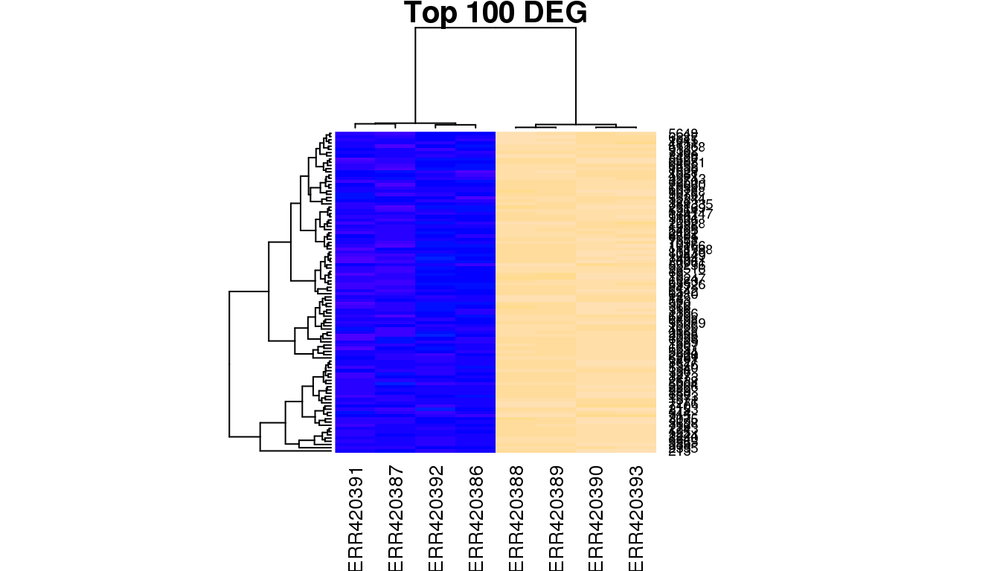
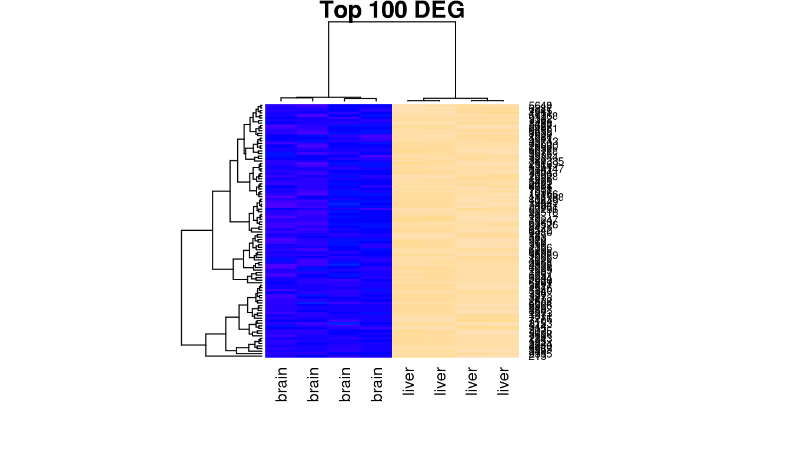
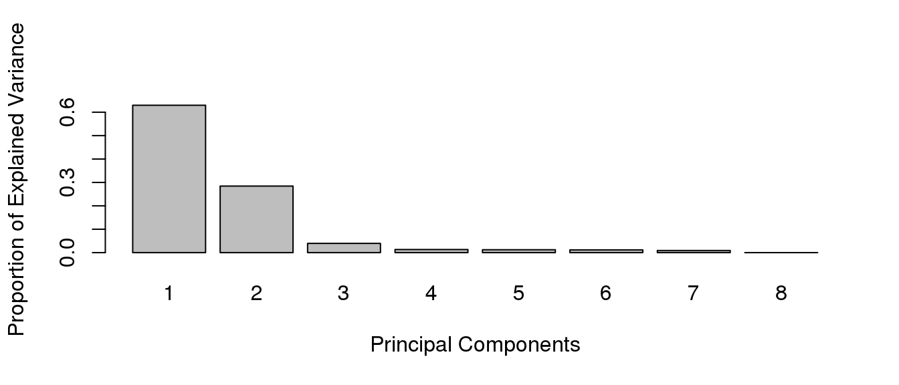
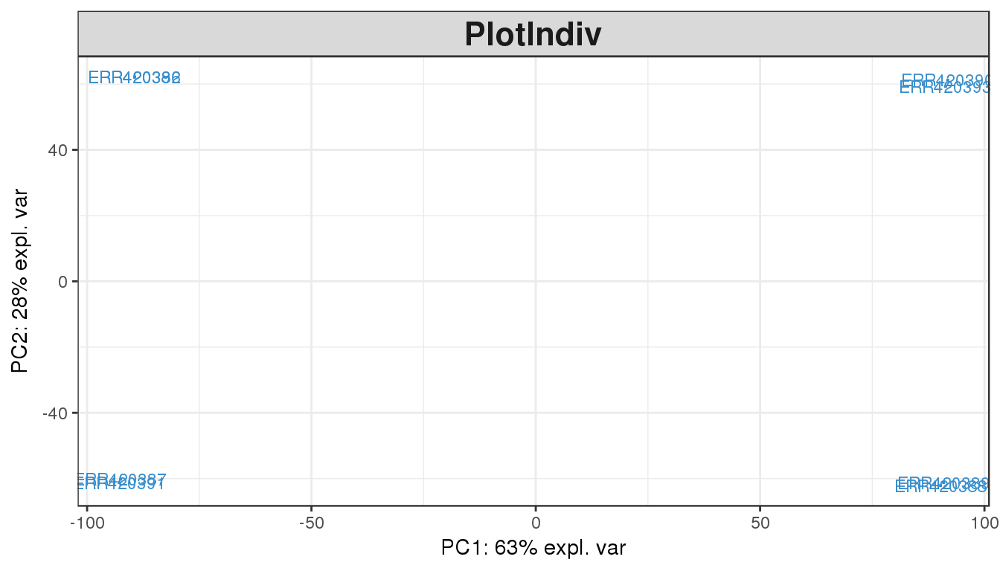
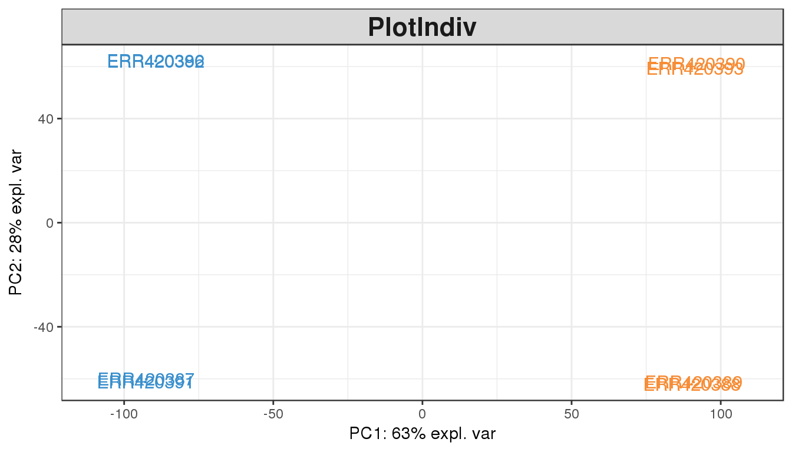

2.8 Batch and sanity checks
2.8.1 Hierachical clustering
In order to investigate the relationship between samples, hierarchical clustering can be performed using the heatmap function. In this example, heatmap calculates a matrix of euclidean distances from the mapped read counts for the 100 most highly expressed genes.
select <- order(rowMeans(counts$counts), decreasing=TRUE)[1:100]
highexprgenes <- counts$counts[select,]
heatmap(highexprgenes, col=topo.colors(50), margin=c(10,6), cexCol=1)
You will notice that the samples clustering does not follow the original order in the data matrix (alphabetical order “ERR420386” to “ERR420393”). They have been re-ordered according to the similarity of the 100 genes expression profiles. To understand what biological effect lies under this clustering, one can use the samples annotation for labeling (samples group, age, sex etc).
heatmap(highexprgenes, col=topo.colors(50), margin=c(10,6), cexCol=1, labCol = group)
Produce a heatmap for the 30 most highly expressed genes and annotate the samples with their age
-
List the samples age from the experimental design (check order!)
-
Annotate the samples in the normalised dataset with their age
-
Subset the read counts object for teh 30 most highly expressed genes
-
Plot a heatmap with this subset of data, scaling genes and ordering both genes and samples
-
Increase or decrease the genes and samples labels font size as required
2.8.2 Principal Component Analysis (PCA)
A Principal Component Analysis (PCA) can also be performed with these data using the mixOmics package . The proportion of explained variance histogram will show how much of the variability in the data is explained by each components.
Reads counts need to be transposed before being analysed with the mixomics functions, i.e. genes should be in columns and samples should be in rows. This is the code for transposing and checking the data before further steps:
library(mixOmics)
rawcounts.df <- t(counts$counts)
dim(rawcounts.df)## [1] 8 25702## filter, remove features where it has 0 counts across all samples
zero.cols <- which(colSums(rawcounts.df) == 0)
rawcounts.filtered <- rawcounts.df[,-zero.cols]
dim(rawcounts.filtered)## [1] 8 23515The proportion of explained variance helps you determine how many components can explain the variability in your dataset and thus how many dimensions you should be looking at.
tuning <- tune.pca(rawcounts.filtered, center=TRUE, scale=TRUE)## Eigenvalues for the first 8 principal components, see object$sdev^2:
## PC1 PC2 PC3 PC4 PC5
## 1.163953e+04 5.804689e+03 3.047613e+03 8.260191e+02 7.918748e+02
## PC6 PC7 PC8
## 7.788229e+02 6.264530e+02 1.209178e-25
##
## Proportion of explained variance for the first 8 principal components, see object$explained_variance:
## PC1 PC2 PC3 PC4 PC5
## 4.949831e-01 2.468505e-01 1.296029e-01 3.512733e-02 3.367531e-02
## PC6 PC7 PC8
## 3.312026e-02 2.664057e-02 5.142155e-30
##
## Cumulative proportion explained variance for the first 8 principal components, see object$cum.var:
## PC1 PC2 PC3 PC4 PC5 PC6 PC7
## 0.4949831 0.7418336 0.8714365 0.9065639 0.9402392 0.9733594 1.0000000
## PC8
## 1.0000000
##
## Other available components:
## --------------------
## loading vectors: see object$rotation
The variable tune$prop.var indicates the proportion of explained variance for the first 10 principal components:
Plotting this variable makes it easier to visualise and will allow future reference.
In most cases, the first 2 or 3 components explain more than half the variability in the dataset and can be used for plotting. The pca function will perform a principal components analysis on the given data matrix. The plotIndiv function will provide scatter plots for sample representation.
result <- pca(rawcounts.filtered, ncomp=3, center=T, scale=T)
plotIndiv(result, comp=c(1,2))
plotIndiv(result, comp=c(1,2), group=group)
The PCA plot of the first two components show a clear separation of the Brain and Liver samples across the 1st dimension. Within each sample group we can also notice a split between the 4 samples of each group, which seem to cluster in pair. This observation can be explained by another factor of variability in the data, commonly batch effect or another biological biais such as age or sex.
DON’T NEED TO REDO THE PCA IF THE ORDER OF SAMPLES IS THE SAME, JUST COLOUR
SHOULD DO PCA ON THE WHOLE DATASET
For the 30 most highly expressed genes, we want to identify the reason for the split between samples from the same tissues. To do this, break the problem down:
- Get the read counts for the 30 most highly expressed genes
- Transpose this matrix of read counts
- Check the number of dimensions explaining the variability in the dataset
- Run the PCA with an appropriate number of components
-
Annotate the samples with their age
- re-run PCA
- plot the main components
-
Annotate the samples with other clinical data
- re-run the PCA
- plot the main components until you can separate the samples within each tissue group